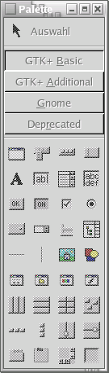
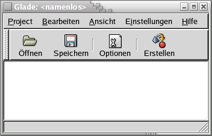
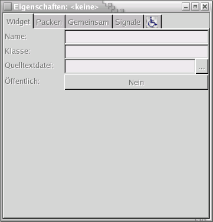

Glade - Rapid Application Development with Gnome 2by Johannes Roith (johannes@jroith.de) |
|  |
Before we try to use glade with our Project, first get some experience with it. Fire up the Glade Interface Designer. You will be greeted by three windows: the main window, a properites and a palette window, containing icons. Click Project - New and select "Gnome Project". To create a new window click on the first icon in the palette-window. The new window is shown in the list. You can modify Type, Position, Caption, and other things in the Properties window. If you want your application to quit, if the window is closed you'll have to connect a signal with an event handler. Select "Signals" and add a handler for "delete_event" and call it "OnWindowDeleteEvent". Take a button and drop it on the window. As you know, gtk+ has the concept of invisible boxes, to position widgets, and for that reason the button will fill the whole window. Modify some properties and add a signal handler for "clicked" and call it "OnButton1Clicked". Save to a new directory. Glade will put 2 files there: [projectname].glade and [projectname].gladep, wich does only save some information for the Interface Builder. The "interesting" file is the .glade file, that you can open in any text editor. It's plain XML and looks like that: |   |
<?xml version="1.0" standalone="no"?> <!--*- mode: xml -*-->
<!DOCTYPE glade-interface SYSTEM "http://glade.gnome.org/glade-2.0.dtd">
<glade-interface>
<widget class="GtkWindow" id="window2">
<property name="visible">True</property>
<property name="title" translatable="yes">window2</property>
<property name="type">GTK_WINDOW_TOPLEVEL</property>
<property name="window_position">GTK_WIN_POS_NONE</property>
<property name="modal">False</property>
<property name="resizable">True</property>
<property name="destroy_with_parent">False
<child>
<widget class="GtkButton" id="button1">
<property name="border_width">10</property>
<property name="visible">True</property>
<property name="can_focus">True</property>
<property name="label" translatable="yes">button1</property>
<property name="use_underline">True</property>
<property name="relief">GTK_RELIEF_NORMAL</property>
</widget>
</child>
</widget>
namespace GladeSamples {
using System;
using Gtk;
using Gnome;
using Glade;
using GtkSharp;
public class GladeTest
{
public static void Main (string[] args)
{
new GladeTest(args);
}
public GladeTest (string[] args)
{
Application.Init();
/* This loads the glade file glade.glade, selects window2 and connects it to the current object,
* which is the class GladeTest here. */
Glade.XML gxml = new Glade.XML ("file.glade", "window2", null);
gxml.Autoconnect (this);
Application.Run();
/* If you want to access the glade objects you have to "import" them.
* This is not required, but else you can only work with the pre-defined signal handlers */
Button button1 = (Gtk.Button) gxml["button1"];
button1.BorderWidth=10;
}
/* Connect the Signals defined in Glade */
public void OnWindowDeleteEvent (object o, DeleteEventArgs args)
{
Application.Quit ();
args.RetVal = true;
}
public void OnButton1Clicked (System.Object obj, EventArgs e)
{
Console.WriteLine ("Button 1 clicked");
}
}
}
 |
mcs /unsafe -r gtk-sharp.dll -r glade-sharp.dll glade.cs |
using Gnome; using Glade;The first part inits the Application.
Glade.XML gxml = new Glade.XML ("file.glade", "window2", null);
gxml.Autoconnect (this);
Altough glade will show all widgets and cares about the events defined, most likely you will want to change properties, or add events during the runtime.
For that to work you have to connect a new object to the glade widget. This example also sets the BorderWidth.
Button button1 = (Gtk.Button) gxml["button1"]; button1.BorderWidth=10;That's it.
Glade.XML gxml = new Glade.XML (null, "file.glade", "window2", null); gxml.Autoconnect (this);You have then to compile the file in, with the resource switch.
mcs /unsafe /resource:glade.glade -r gtk-sharp.dll -r glade-sharp.dll glade.cs